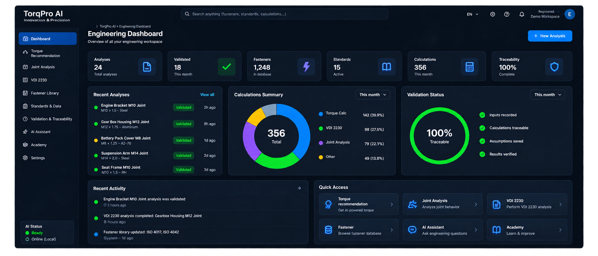
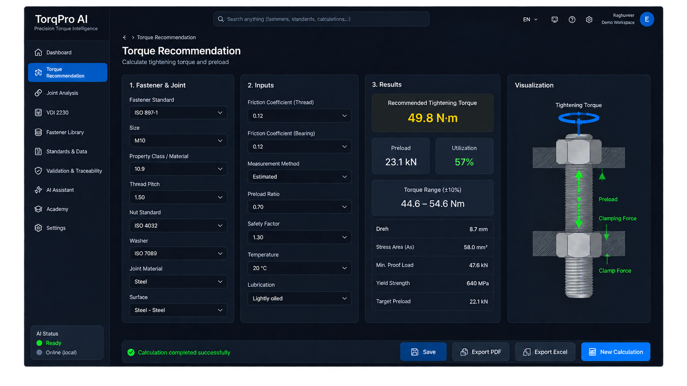
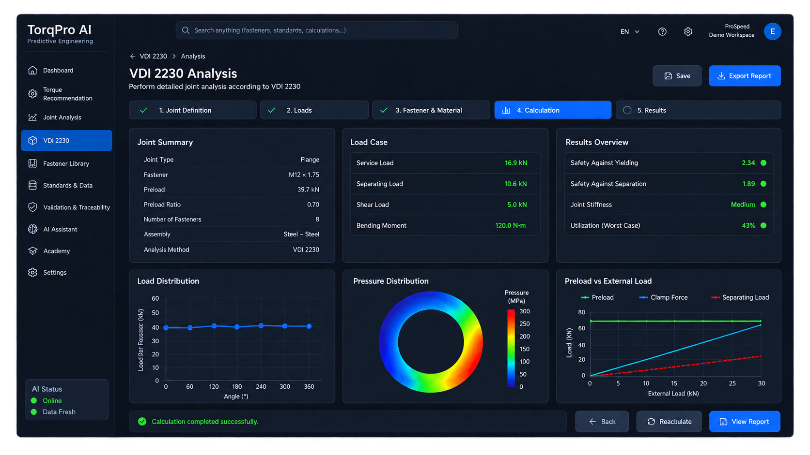

Torque & preload
Deterministic torque/preload estimates with clearly defined engineering assumptions.
Bring torque and preload calculations, bolted-joint engineering, validation, and traceability into one practical workflow—grounded in deterministic calculations with AI-assisted knowledge.

Product interface image from the TorqPro AI web repository.
Calculation, evaluation, and manufacturing verification belong in a connected engineering process.
Deterministic torque/preload estimates with clearly defined engineering assumptions.
Standards-informed joint-load and capacity evaluation workflows, including VDI 2230 concepts.
Explore the influence of tightening parameters and friction on the torque–preload relationship.
Connect engineering targets to measurement, validation, and process monitoring.
Keep engineering context, calculations, and evaluation records organized.
Use AI for interpretation and support, while critical engineering formulas remain deterministic.
Fastener, joint, loading, and friction inputs.
Repeatable torque, preload, and joint assessments.
Review assumptions, limits, and engineering outputs.
Compare with measurements and track the process.

Present input assumptions and calculated outputs in an accessible interface rather than an isolated number.
Try the demo ↗Review load-bearing and joint-design considerations using standards-informed methods and explicit assumptions.

Relevant to teams who specify, design, validate, manufacture, or audit critical bolted connections.
Discover bolted-joint compliance, bolt and clamped-part stiffness, separation safety, residual clamp force and average contact pressure—along with declared scope limitations from the application documentation.
Bolt/plate compliance and external-load distribution.
Residual clamp force and separation-limit evaluation.
Axial stress is not a full reduced-stress check; average contact pressure is not an FEA distribution.
The engineering workflow draws on recognized frameworks including VDI 2230, ISO 16047, and ISO 2320. References do not imply certification or verified compliance of every feature; users must validate calculations for their application.
Explore research reference ↗